01
Learning by doing
Hands-on experimentation made a new tool faster to learn — and AI accelerated the moments where I got stuck.
Private Portfolio
This portfolio is currently shared with selected reviewers.
Please enter the password to continue.
Incorrect password.
Case Study
From fragmented Excel planning to an interactive financial dashboard built for faster, clearer decisions.
Note: Internal information has been anonymized and simplified. The dashboard mockups are fictional and communicate only the type and structure of the solution.
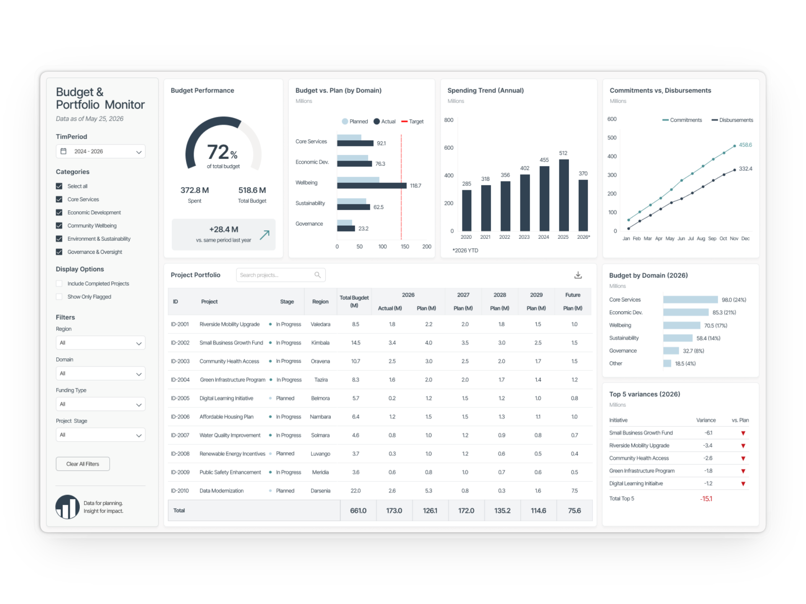
About me
I untangle complex data and shape it into intuitive experiences that empower users to make informed decisions with confidence.
Outside work: songwriting, swimming in the Aare and eating noodle soups.
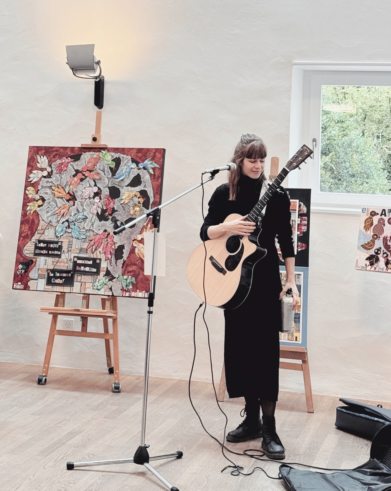
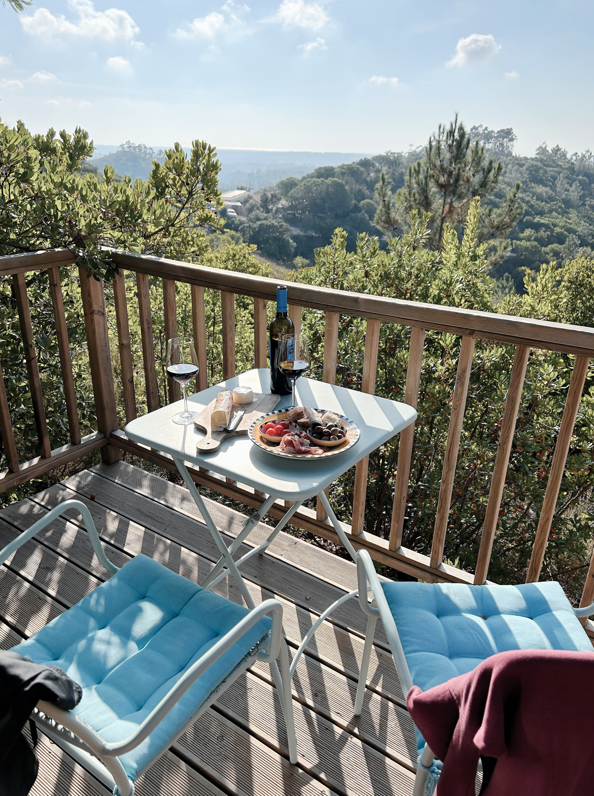
Context
Environment
Official development assistance and international cooperation, with projects implemented across multiple countries.
Scale & people
Teams were responsible for planning and steering more than CHF 400M annually, involving section heads, project managers and financial specialists.
My position
I was working in financial controlling, supporting the planning process through financial systems, Excel and internal reporting tools.
Problem
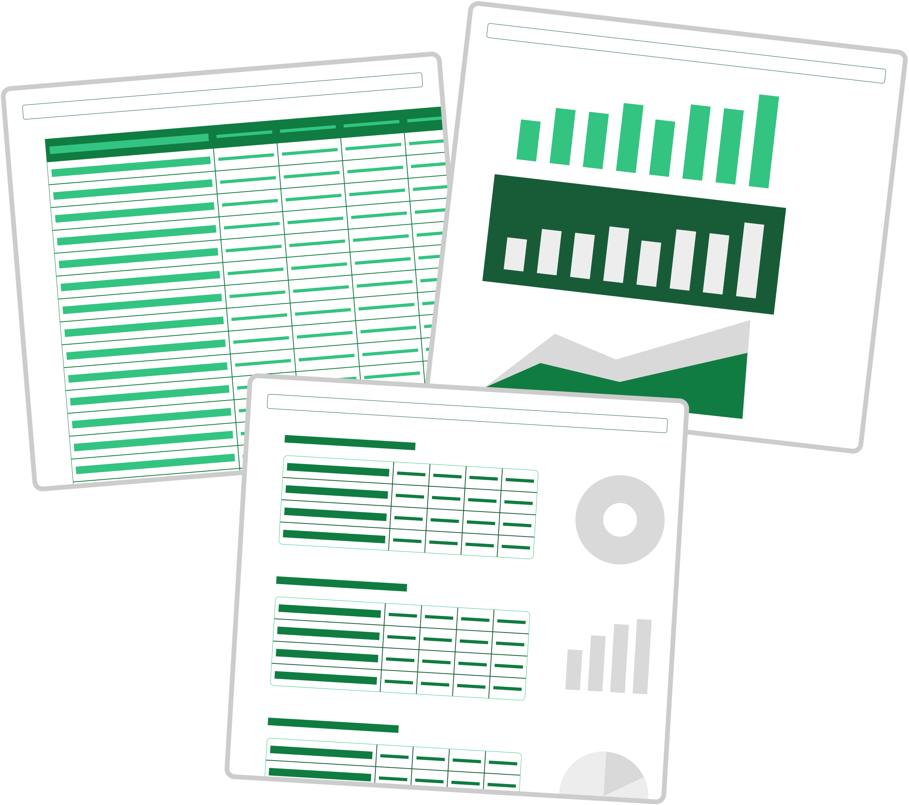
Analysts prepared data before they could actually discuss it.
Comparing, filtering or drilling down required extra views and calculations.
Multiple files made the latest and most reliable version unclear.
Process
without prior Power BI experience, regular responsibilities needing 80% and a rather change-averse environment.
Constraint: I started with no prior Power BI experience and developed the solution alongside my regular responsibilities.
01 — Research
Interviews and user journeys revealed that several user groups needed the same data for very different decisions.
Prioritize the people driving planning decisions — without excluding secondary users.
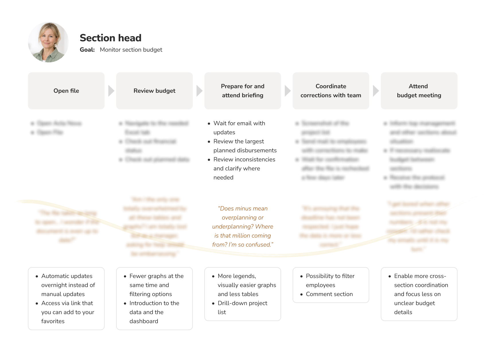
02 — Design · Explore
I used paper sketches and Figma prototypes to explore different structures and interactions quickly before committing to a final direction.
Figma made it possible to iterate quickly before committing changes to Power BI.
02 — Design · Decisions
The exploration translated into concrete decisions around user priorities, visual hierarchy, graphics, color and typography.
Hover over the visual to explore the design decisions.
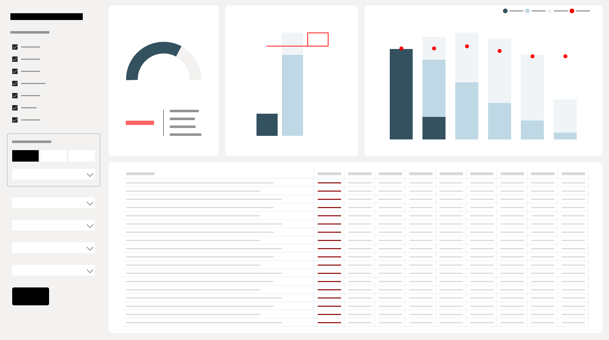
Build trust through consistency
Consistent layouts, standardized metrics and a single source of truth help users understand the data faster and increase confidence in the information.
Optimize for high-impact users
Although several user groups used the dashboard, the experience was primarily designed around the needs of the people driving planning and budget decisions. Secondary users could still access the information they needed through filtering and drill-downs.
Leaving no one behind
Specific filters for non-primary user groups were added to ensure that all users could access the information they needed.
Choosing the right graphics
Preserving existing graphics where appropriate, while adding new ones where they added value.
Less color, more clarity
Rather than adopting the full departmental color palette, a restrained set of neutral tones was used to create a calm, data-focused interface. Federal red remains the only accent color, drawing attention where it matters without creating unnecessary visual clutter.
Make every pixel count
As the dashboard was intended for internal use, strict adherence to the official design system was not required. A more compact typeface was chosen to accommodate longer project titles.
03 — Build
Power BI was new territory. I learned the tool while turning the prototype into a working product and setting up the processes around it.
Learn → test → build → repeat.
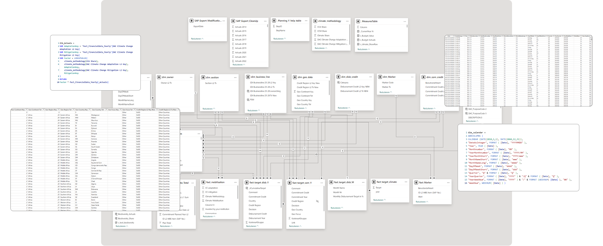
04 — Test
Usability testing uncovered four improvements before launch. A post-launch survey then tested adoption and satisfaction.
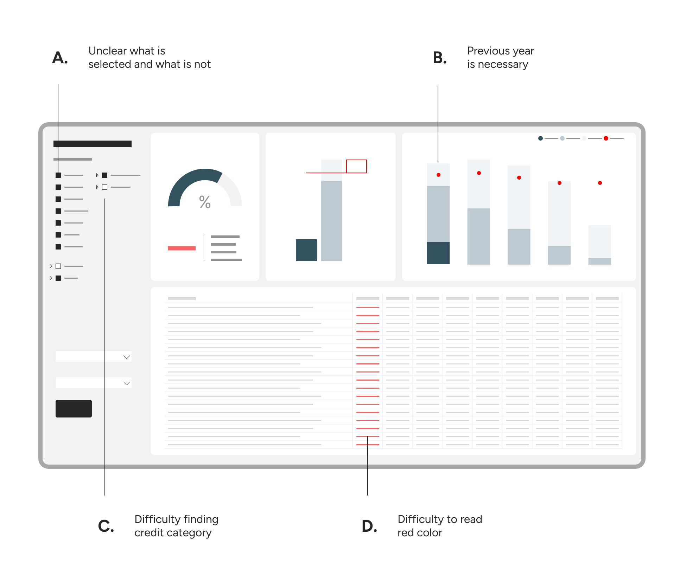
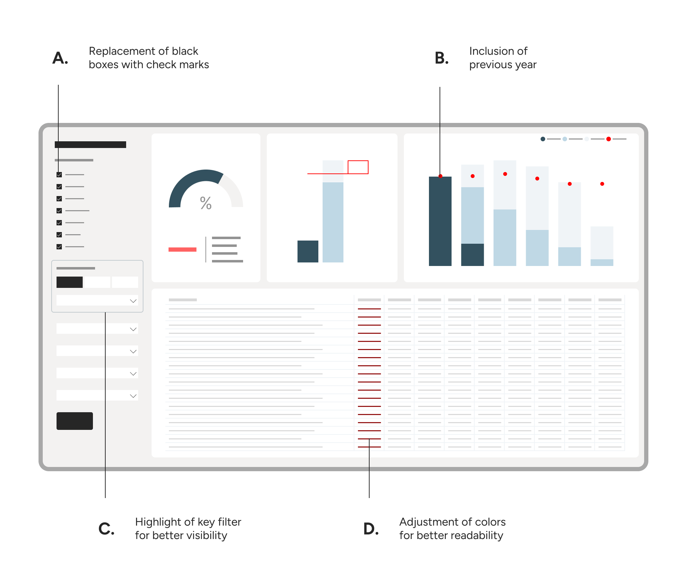
The final product
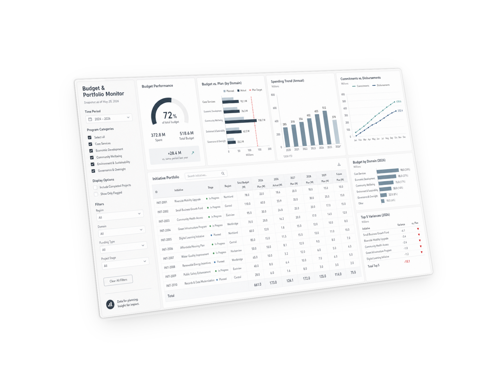
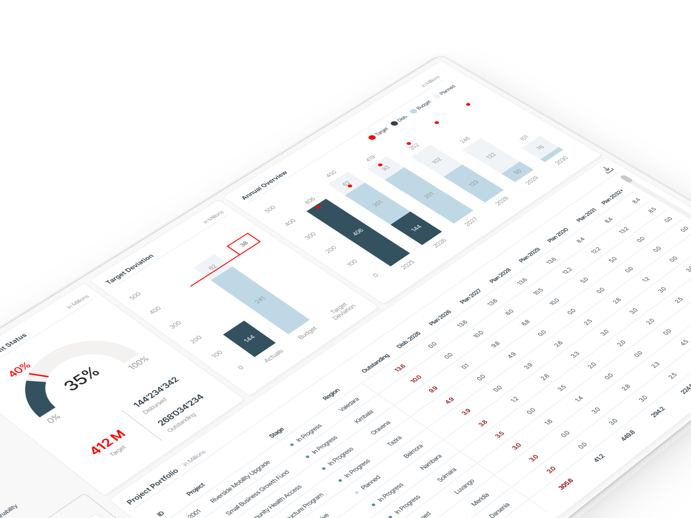
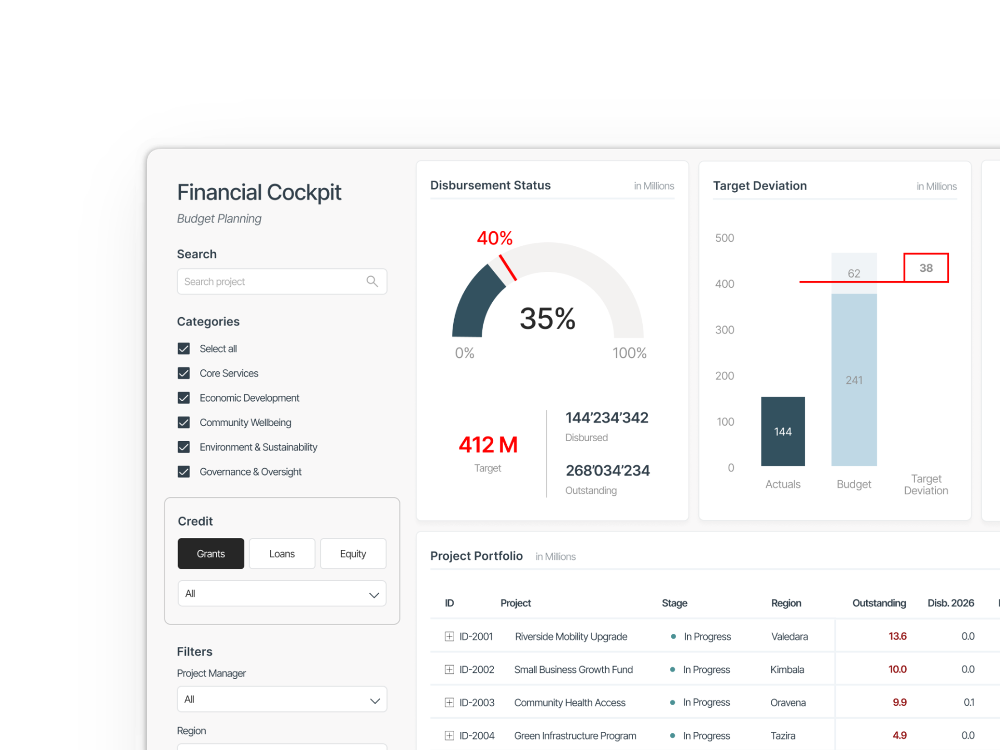
Impact
Reflection
01
Hands-on experimentation made a new tool faster to learn — and AI accelerated the moments where I got stuck.
02
People do not need to be users to accelerate or slow a product. Shared ownership removes blockers.
03
Iterating in Figma takes minutes. The same design change in Power BI can take considerably longer.